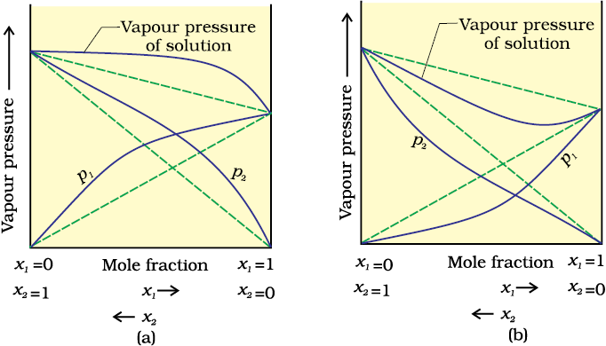
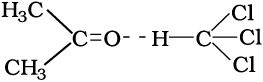

Liquid-liquid solutions can be classified into ideal and non-ideal solutions on the basis of Raoult's law.
The solutions which obey Raoult’s law over the entire range of concentration are known as ideal solutions. The ideal solutions have two other important properties. The enthalpy of mixing of the pure components to form the solution is zero and the volume of mixing is also zero, i.e.,
∆mixH = 0, ∆mixV = 0
It means that no heat is absorbed or evolved when the components are mixed. Also, the volume of solution would be equal to the sum of volumes of the two components. At molecular level, ideal behaviour of the solutions can be explained by considering two components A and B. In pure components, the intermolecular attractive interactions will be of types A-A and B-B, whereas in the binary solutions in addition to these two interactions, A-B type of interactions will also be present. If the intermolecular attractive forces between the A-A and B-B are nearly equal to those between A-B, this leads to the formation of ideal solution. A perfectly ideal solution is rare but some solutions are nearly ideal in behaviour. Solution of n-hexane and n-heptane, bromoethane and chloroethane, benzene and toluene, etc. fall into this category.
When a solution does not obey Raoult’s law over the entire range of concentration, then it is called non-ideal solution. The vapour pressure of such a solution is either higher or lower than that predicted by Raoult’s law (p1° + (p2° – p1°) x2). If it is higher, the solution exhibits positive deviation and if it is lower, it exhibits negative deviation from Raoult’s law. The plots of vapour pressure as a function of mole fractions.
The cause for these deviations lie in the nature of interactions at the molecular level. In case of positive deviation from Raoult’s law, A-B interactions are weaker than those between A-A or B-B, i.e., in this case the intermolecular attractive forces between the solute-solvent molecules are weaker than those between the solute-solute and solvent-solvent molecules. This means that in such solutions, molecules of A (or B) will find it easier to escape than in pure state. This will increase the vapour pressure and result in positive deviation. Mixtures of ethanol and acetone behave in this manner. In pure ethanol, molecules are hydrogen bonded. On adding acetone, its molecules get in between the host molecules and break some of the hydrogen bonds between them. Due to weakening of interactions, the solution shows positive deviation from Raoult’s law. In a solution formed by adding carbon disulphide to acetone, the dipolar interactions between solute-solvent molecules are weaker than the respective interactions among the solute-solute and solvent-solvent molecules. This solution also shows positive deviation.

The vapour pressures of two component systems as a function of composition (a) a solution that shows positive deviation from Raoult's law and (b) a solution that shows negative deviation from Raoult's law.
In case of negative deviations from Raoult’s law, the intermolecular attractive forces between A-A and B-B are weaker than those between A-B and leads to decrease in vapour pressure resulting in negative deviations. An example of this type is a mixture of phenol and aniline. In this case the intermolecular hydrogen bonding between phenolic proton and lone pair on nitrogen atom of aniline is stronger than the respective intermolecular hydrogen bonding between similar molecules. Similarly, a mixture of chloroform and acetone forms a solution with negative deviation from Raoult’s law. This is because chloroform molecule is able to form hydrogen bond with acetone molecule as shown.

This decreases the escaping tendency of molecules for each component and consequently the vapour pressure decreases resulting in negative deviation from Raoult’s law.
Some liquids on mixing, form azeotropes which are binary mixtures having the same composition in liquid and vapour phase and boil at a constant temperature. In such cases, it is not possible to separate the components by fractional distillation. There are two types of azeotropes called minimum boiling azeotrope and maximum boiling azeotrope. The solutions which show a large positive deviation from Raoult’s law form minimum boiling azeotrope at a specific composition. For example, ethanol-water mixture (obtained by fermentation of sugars) on fractional distillation gives a solution containing approximately 95% by volume of ethanol. Once this composition, known as azeotrope composition, has been achieved, the liquid and vapour have the same composition, and no further separation occurs.
The solutions that show large negative deviation from Raoult’s law form maximum boiling azeotrope at a specific composition. Nitric acid and water is an example of this class of azeotrope. This azeotrope has the approximate composition, 68% nitric acid and 32% water by mass, with a boiling point of 393.5 K.